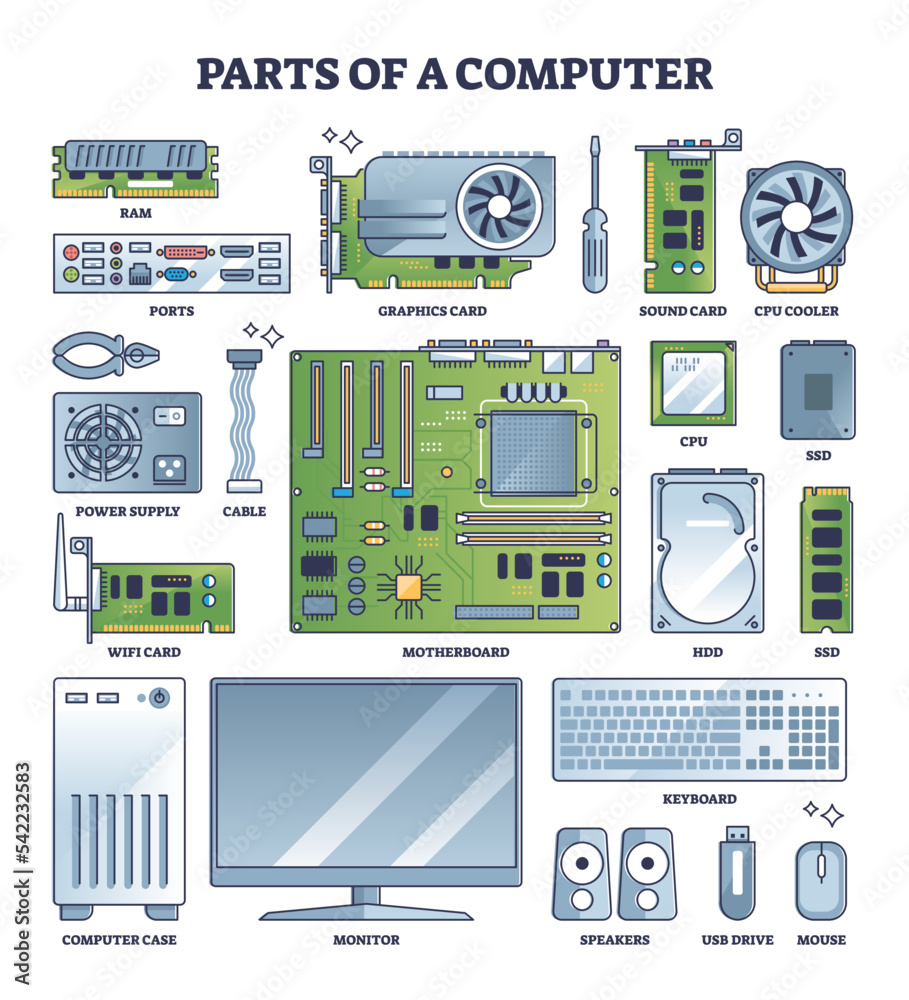
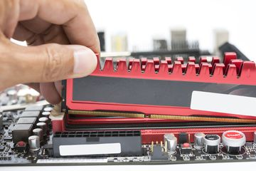
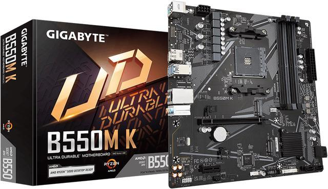
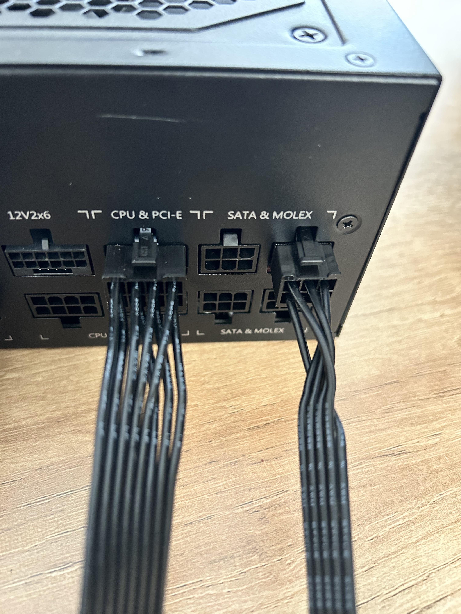
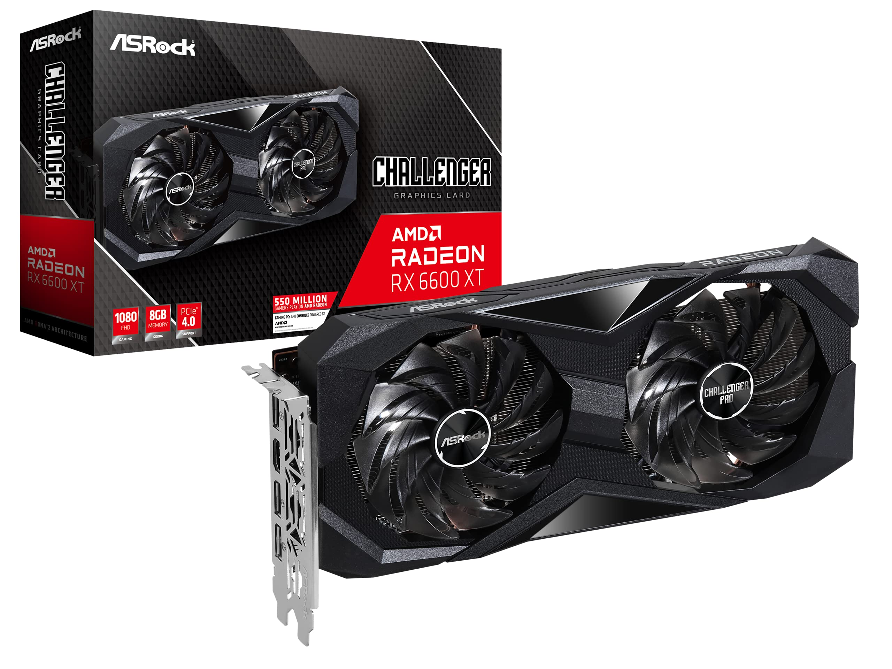
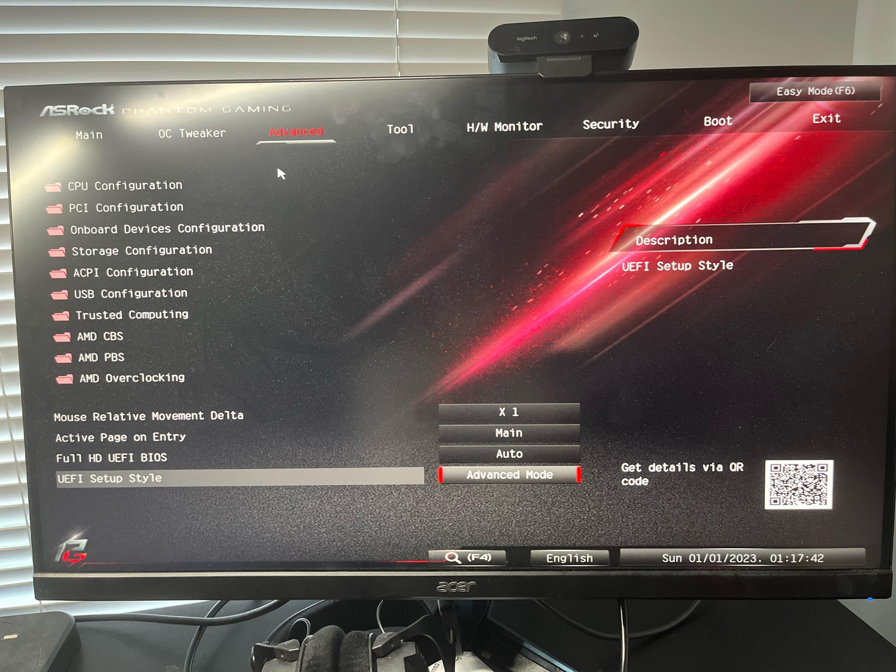

Comprehensive Steps to Build Your Gaming PC
Step 1: Set Your Budget and Purpose
Start by determining your budget and the type of gaming experience you want. For example:
- Entry-level gaming: $500 - $800
- Mid-range gaming: $800 - $1,500
- High-end gaming: $1,500+
Knowing your budget helps you choose the right components for your build.

Step 2: Research and Choose Components
Pick compatible parts to match your budget and gaming needs. Key components include:
- CPU: AMD Ryzen 5/7 or Intel Core i5/i7.
- GPU: NVIDIA RTX or AMD Radeon for graphics performance.
- RAM: At least 16GB of DDR4.
- Storage: SSD for speed, HDD for additional storage.
- Motherboard: Make sure compatibility with CPU (Am4 boards etc..) and features like Wi-Fi.
- PSU: Choose a good reliable power supply such as EVGA and do not cheap out.
- Case: Pick a case that fits your style and provides good airflow.

Step 3: Gather Tools and Prepare Workspace
Before you begin, gather the following tools and ensure your workspace is clean and static-free:
- Phillips-head screwdriver
- Anti-static wrist strap
- Zip ties for cable management

Step 4: Install the CPU and Cooler
Attach the CPU to the motherboard. Align the notches on the CPU with the socket and gently secure it. Install the CPU cooler to prevent overheating.

Step 5: Install the RAM
Insert the RAM sticks into the appropriate slots on the motherboard. Push down until they click into place.

Step 6: Mount the Motherboard
Secure the motherboard to the case using screws. Ensure proper alignment with the I/O shield.

Step 7: Install Storage Drives
Mount your SSD or HDD in the drive bays and connect them to the motherboard using SATA cables.

Step 8: Connect the Power Supply
Install the PSU in the case. Connect the power cables to the motherboard, CPU, and other components.

Step 9: Install the GPU
Insert the GPU into the PCIe slot on the motherboard. Secure it with screws and connect the power cables if required.

Step 10: Boot Up and Install Software
Turn on your PC and access the BIOS to ensure all components are detected. Install your operating system, drivers, and any required software.
